gravis¶
Welcome! You have found the documentation of the Python 3 package gravis.
What is this package?¶
Its name stands for graph visualization and its purpose is to create interactive 2D and 3D plots of graphs and networks such as those in following examples:
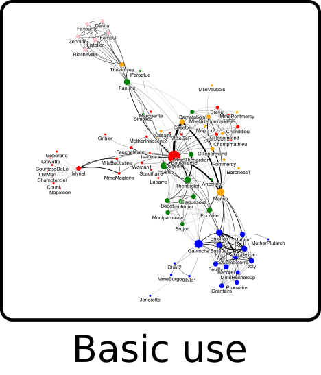 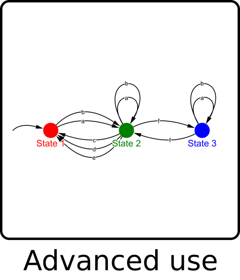 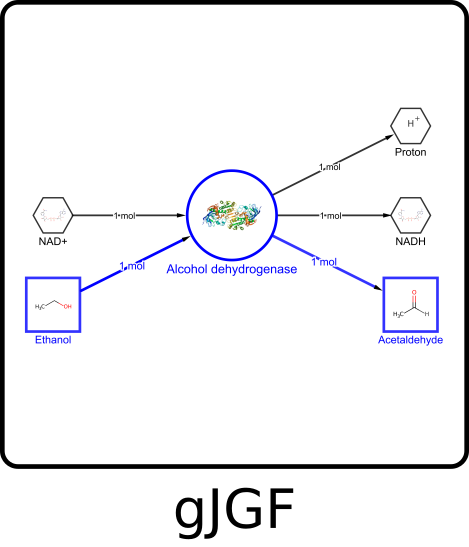 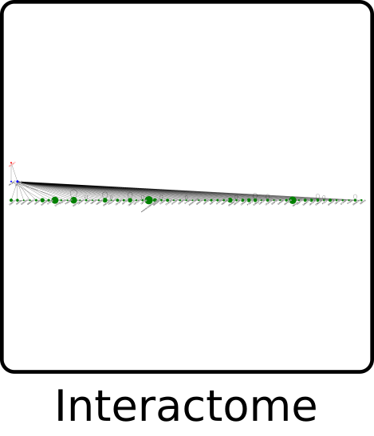 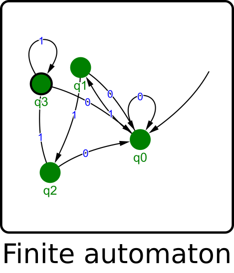 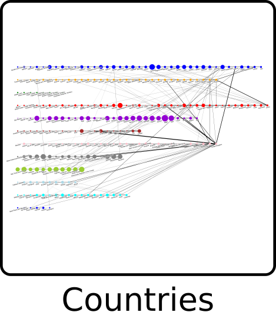 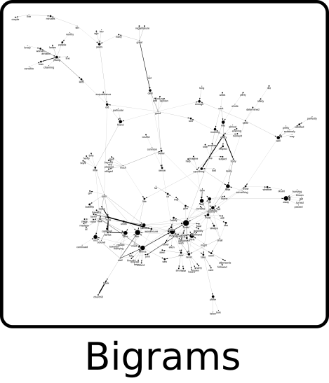 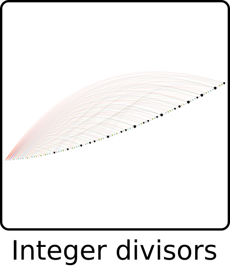 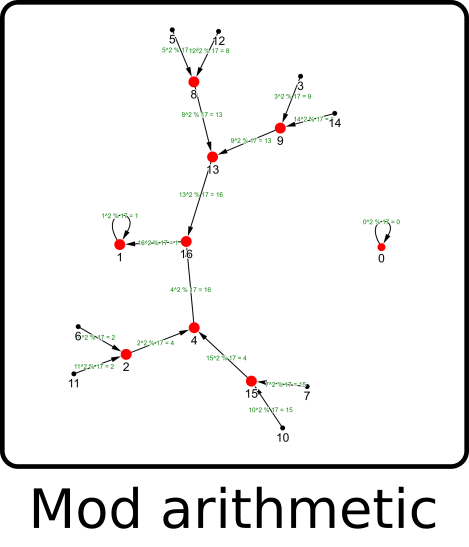 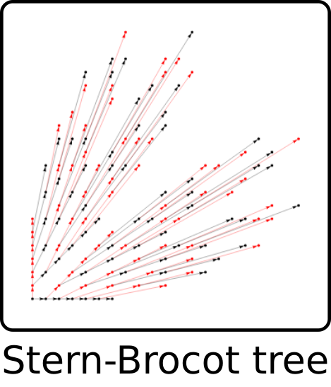 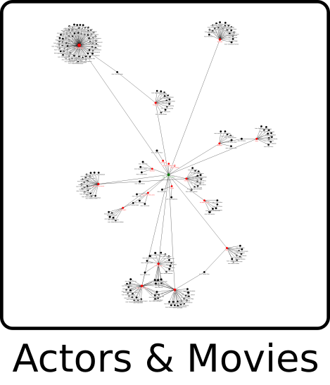 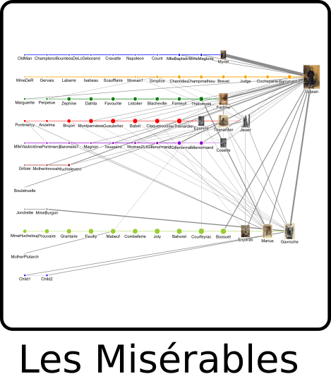 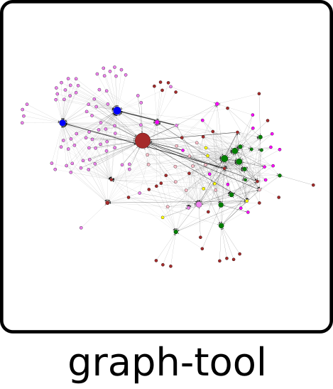 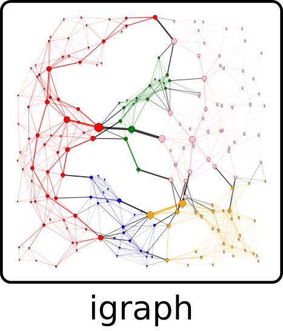 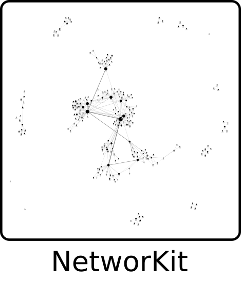 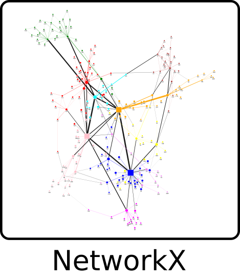 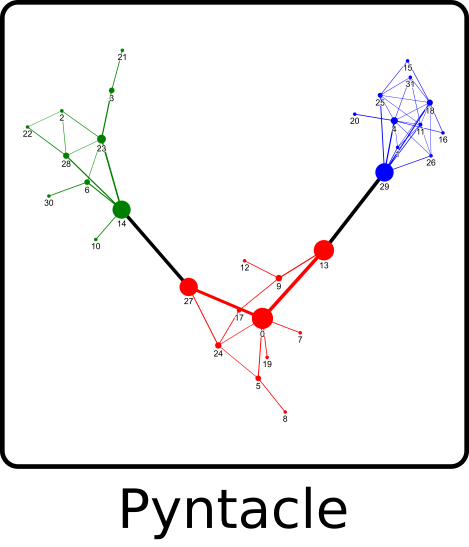 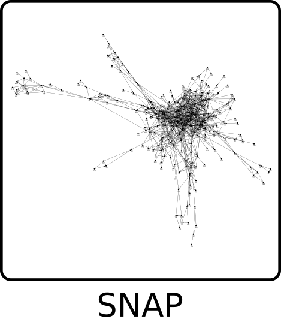
It uses Python for preparing graph data and web technologies (HTML/CSS/JS) for rendering it, based largely on the JavaScript libraries d3.js, vis.js and 3d-force-graph.js / three.js. The results can either be displayed in a webbrowser window, embedded in a Jupyter notebook, exported to standalone HTML files or served as HTML text in a web app. There is also support for exporting static images in JPG, PNG and SVG format, either by manually clicking a button inside a HTML visualization or programmatically with Selenium, which takes a few seconds to render in a headless browser.
Two types of input data can be passed to the plotting functions: 1) a JSON string or equivalent Python dictionary that encodes a graph in a custom format called gravis JSON Graph Format (gJGF) or 2) an external graph object that is automatically translated to gJGF and may come from the following supported Python packages: graph-tool, igraph, NetworKit, NetworkX, pyntacle and SNAP.
How can it be used?¶
To get a first impression of the package in action, here is a small code example. More comprehensive examples are available on separate pages.
import igraph as ig
import gravis as gv
import networkx as nx
graph = {'graph': {'nodes': {'A': {}, 'B': {}}, 'edges': [{'source': 'A', 'target': 'B'}]}}
fig = gv.vis(graph)
fig.display()
graph = nx.powerlaw_cluster_graph(n=120, m=2, p=0.95)
fig = gv.three(graph)
fig.export_html('powerlaw_cluster.html')
graph = ig.Graph.Forest_Fire(120, 0.15)
fig = gv.d3(graph, zoom_factor=0.25)
fig.export_svg('forest_fire.svg')
Results: powerlaw_cluster.html and forest_fire.svg
{kind=link}
Interpretation: The first graph is defined as Python dictionary adhering to gJGF and displayed in a webbrowser window that opens up automatically. The second graph is created with the function powerlaw_cluster_graph from NetworkX, internally translated to gJGF and exported as interactive HTML file. The third graph is created with the function Forest_Fire from iGraph, also translated to gJGF and exported as static SVG file.
Why is it relevant?¶
Graphs and networks are studied in various scientific disciplines, including but not limited to mathematics, computer science, chemistry, biology, medicine and social science. Consequently, there is already a range of graph analysis and visualization software out there, such as the standalone tools Gephi, Cytoscape or Tulip. This package tries to add some capabilities to the Python ecosystem by seamlessly connecting it to visualization libraries from the JavaScript ecosystem, which enables the following features and more:
Simple creation of interactive graph visualizations directly from within Python, powered by JavaScript libraries and highly optimized modern webbrowsers.
Accepting graph objects from existing Python libraries as input and auto-converting them to a single JSON-based format that can also be provided directly by the user or other libraries.
Mapping of graph annotations to visual elements and their appearances, revealing much more information than plain connectivities.
Displaying images inside nodes, or in a separate area when hovering or clicking on a node.
Flexible layouting to see substructures within a graph from different perspectives. Coordinates can come pre-calculated from external layout algorithms, live-calculated by different layouting algorithms running in the browser, or various user interactions such as moving and fixing nodes or adjusting force parameters.
Easy sharing of results either by standalone HTML files, Jupyter notebooks with embedded graph visualizations that can be exported as a single HTML file, or HTML text that can be served in web apps with Python web frameworks such as Flask and Django.
When should it be used?¶
This package can be used for quickly generating interactive visualizations of moderately sized graphs (<10000 nodes to be possible, <1000 nodes to be fluid), which can be directed or undirected and may contain self-loops and multiedges. There are some scenarios where gravis might be especially useful:
With its strong support for Jupyter notebooks, it is highly suitable for exploratory data analysis and sharing results with others.
With its capabilities of mapping graph annotations to visual elements, it is able to display the results of network analysis algorithms, for example by showing network metrics like centrality values in form of node sizes, or by highlighting groups of related nodes found by community detection in form of shared node colors. An example can be found in the Les Misérables notebook.
With its support for displaying images inside nodes, it can be used in situations where it is necessary to depict graphical information in order to convey the meaning of nodes, such as in the case of molecule structures within chemical reaction networks, which to a large extent motivated the creation of this package. An example can be found in the gJGF notebook.
By allowing users to initially see a whole network, then pan and zoom to interesting regions, and finally retrieve detailed information when hovering over or clicking on a node or edge, it is possible to build simple information visualization applications that adhere to the visual information-seeking mantra by Ben Shneiderman: “Overview first, zoom and filter, then details-on-demand”. An example can be found in the neighboring countries notebook.
Who can benefit from it?¶
Users of graph-tool, iGraph, NetworKit, NetworkX, Pyntacle and SNAP get a new package for visualizing the graph objects they are already working with. Its installation is deliberately kept simple with a single pip command and minimal dependencies, so the burden to get started is very low.
Scientists and technologists working with graphs and networks get a rich and flexible way to encode, analyze and visualize them.
Developers of software that deals with any kind of graph, tree or connectivity data can use it for debugging purposes or to add plotting features for their users.
People without much background knowledge in graph and network theory may get interested in these topics by being exposed to visually appealing examples that are easy to reproduce and extend.
How can you get started?¶
The installation guide explains how to download and install the package and its dependencies.
The examples provide an easy way to get started with using the package.
The API documentation is the single source of truth for all details about each available function.
Where is everything located?¶
The package reference page contains links to all parts of this project, including source code (with tests, docs, examples), packaged code (for distribution via PyPI and pip) and this documentation website.